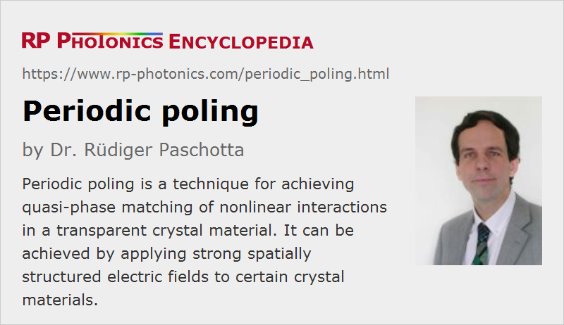

Periodic Poling
Definition: a technique for achieving quasi-phase matching of nonlinear interactions in a transparent crystal material
German: periodisches Polen
Categories: optical materials, nonlinear optics, methods
How to cite the article; suggest additional literature
Author: Dr. Rüdiger Paschotta
Periodic poling of nonlinear crystal materials is a technique for obtaining quasi-phase matching [1] of nonlinear interactions. It involves a process which generates a periodic reversal of the domain orientation (domain inversion) in a nonlinear crystal, so that the sign of the nonlinear coefficient also changes.
Ferroelectric Domain Engineering
The most common technique for periodic poling is ferroelectric domain engineering [2]. This involves the application of a strong electric field to a ferroelectric crystal via patterned electrodes on the crystal surface, which typically have a period between a few microns and some tens of microns, and are usually produced with a photolithographic process. The poling period (i.e. the period of the electrode pattern) determines the wavelengths for which certain nonlinear processes can be quasi-phase-matched. Domain reversal occurs for a field strength above the so-called coercive field strength, which is e.g. ≈ 21 kV/mm in congruent lithium niobate (LiNbO3). Such high field strengths have to be applied with great care to avoid discharges in air and destruction of the crystal. The process is particularly challenging for thick samples (more than 0.5 mm), where the poling quality is sometimes good only near the electrodes. Another challenge is to achieve a high poling quality for small poling periods (well below 10 μm), as required, e.g., for frequency doubling to the visible spectral range. Stoichiometric lithium niobate (SLN) has a much lower coercive field strength of roughly 2 kV/mm, which greatly facilitates periodic poling, even for thicker samples.
Note that the details of the poling process have to be optimized for each particular type of nonlinear crystal; this can involve the preparation of crystal surfaces, the choice of electrode materials and details of electrode fabrication, the magnitude, shape and duration of applied electric pulses (often actively controlled with real-time monitoring e.g. of the flown electric charge or optical polarization changes), and the choice of temperature during the poling process. There are also methods to suppress domain back-switching, or to exploit backswitching for high-quality poling [4].
Ferroelectric nonlinear crystal materials which are suitable for periodic poling with electric fields include lithium niobate (LiNbO3), lithium tantalate (LiTaO3), potassium titanyl phosphate (KTP, KTiOPO4) and potassium titanyl arsenate (KTA, KTiOAsO4). The periodically poled materials are often given a name beginning with “PP”, for example PPKTP (periodically poled KTP), PPLN (periodically poled lithium niobate) and PPLT (periodically poled lithium tantalate). PPLN and PPLT crystals are often used in, e.g., optical parametric oscillators and frequency doublers, and are also available in the form of nonlinear waveguides. The combination of the high nonlinearity of PPLN with strong confinement in a waveguide allows for efficient nonlinear interactions even at fairly low power levels.
It is possible to periodically pole a large proportion of a whole crystal wafer, e.g. of lithium niobate or tantalate, in a single process, and later cut that wafer into many small crystals. In that way, the processing cost can be relatively low for fabrication of large quantities, whereas periodically poled materials are usually expensive when made in small quantities.
Periodic Poling of Glasses
There have also been interesting attempts to perform periodic poling of optical glass fibers. This is possible because the application of a strong electric field (often applied in a vacuum chamber, together with elevated temperature) for some time can induce a χ(2) nonlinearity in the originally isotropic glass. Even if the effective nonlinear coefficient achieved is not very high, some moderate length of glass with a decent poling quality could permit efficient nonlinear frequency conversion within all-fiber devices.
Fabrication of Orientation-patterned Semiconductors
It is also possible to fabricate semiconductor materials such as gallium arsenide (GaAs) with periodic patterns of domain orientation, which lead to a periodically changing sign of the effective nonlinear coefficient. However, this is not achieved by application of an electric field; gallium arsenide, for example, is not ferroelectric, so that such a technique could not work. Other techniques have been worked out for such periodic patterning, but they are usually not called periodic poling. The article on orientation-patterned semiconductors contains more details.
Questions and Comments from Users
Here you can submit questions and comments. As far as they get accepted by the author, they will appear above this paragraph together with the author’s answer. The author will decide on acceptance based on certain criteria. Essentially, the issue must be of sufficiently broad interest.
Please do not enter personal data here; we would otherwise delete it soon. (See also our privacy declaration.) If you wish to receive personal feedback or consultancy from the author, please contact him e.g. via e-mail.
By submitting the information, you give your consent to the potential publication of your inputs on our website according to our rules. (If you later retract your consent, we will delete those inputs.) As your inputs are first reviewed by the author, they may be published with some delay.
Bibliography
| [1] | P. A. Franken and J. F. Ward, “Optical harmonics and nonlinear phenomena”, Rev. Mod. Phys. 35, 23 (1963) (first report of periodic poling), doi:10.1103/RevModPhys.35.23 |
| [2] | M. Yamada et al., “First-order quasi-phase matched LiNbO3 waveguide periodically poled by applying an external field for efficient blue second-harmonic generation”, Appl. Phys. Lett. 62, 435 (1993), doi:10.1063/1.108925 |
| [3] | G. Miller, “Periodically poled lithium niobate: modeling, fabrication, and nonlinear-optical performance”, http://nlo.stanford.edu/content/periodically-poled-lithium-niobate-modeling-fabrication-and-nonlinear-optical-performance, Ph. D. thesis at the University of Stanford (1998); see also references therein |
| [4] | R. G. Batchko et al., “Backswitch poling in lithium niobate for high-fidelity domain patterning and efficient blue light generation”, Appl. Phys. Lett. 75, 1673 (1999), doi:10.1063/1.124787 |
| [5] | K. Nakamura et al., “Periodic poling of magnesium-oxide-doped lithium niobate”, J. Appl. Phys. 91 (7), 4528 (2002), doi:10.1063/1.1456965 |
See also: quasi-phase matching, nonlinear crystal materials, effective nonlinear coefficient
and other articles in the categories optical materials, nonlinear optics, methods
|  |
If you like this page, please share the link with your friends and colleagues, e.g. via social media:
These sharing buttons are implemented in a privacy-friendly way!